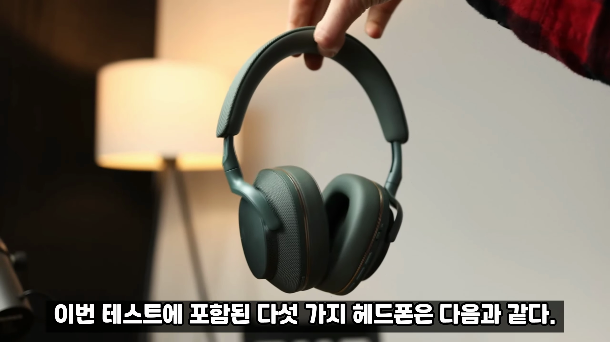
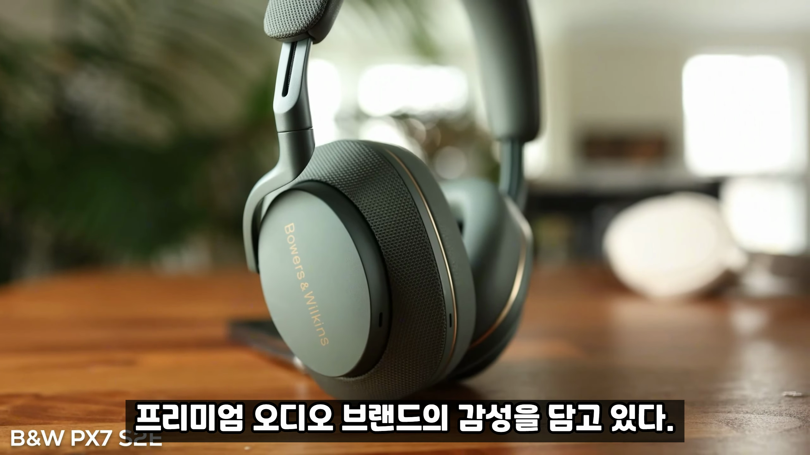
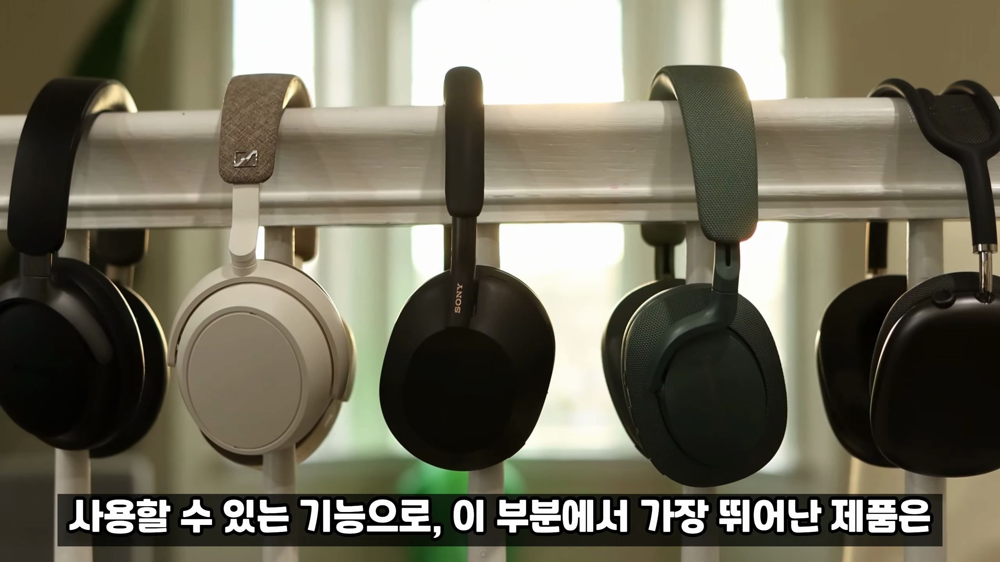
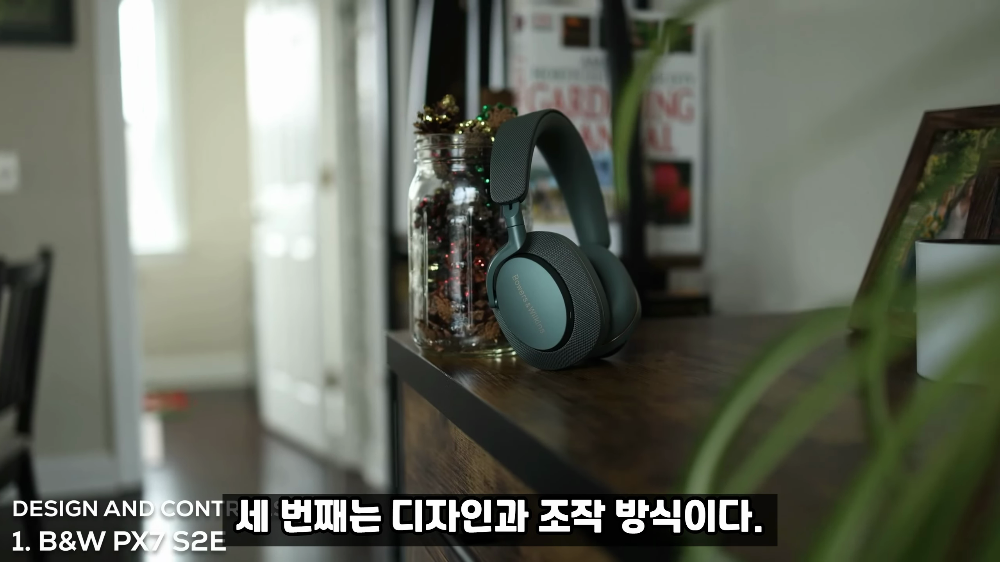
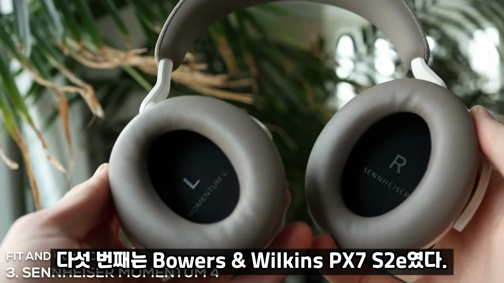
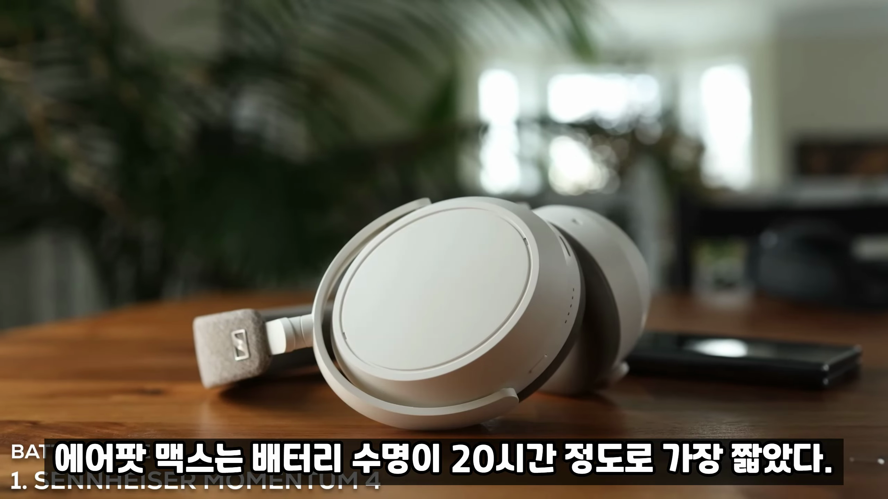
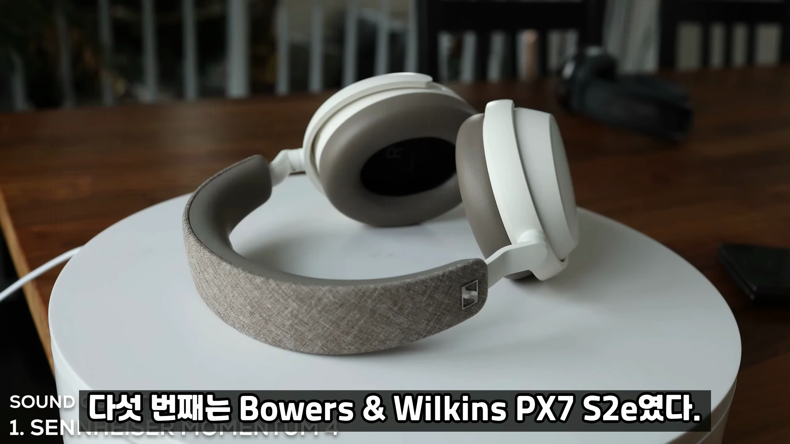
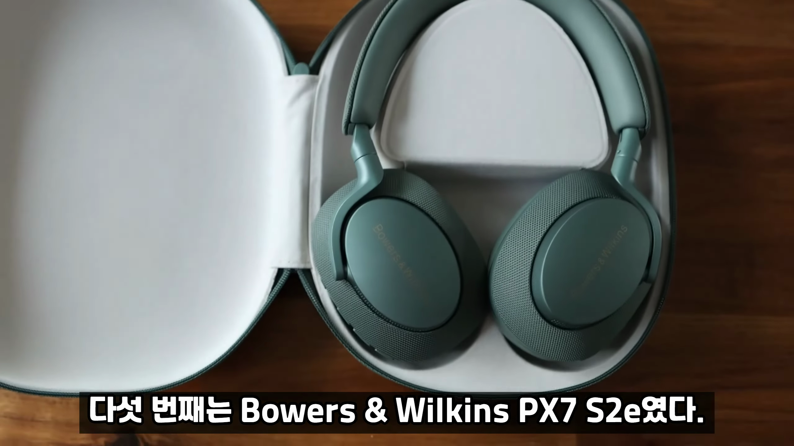
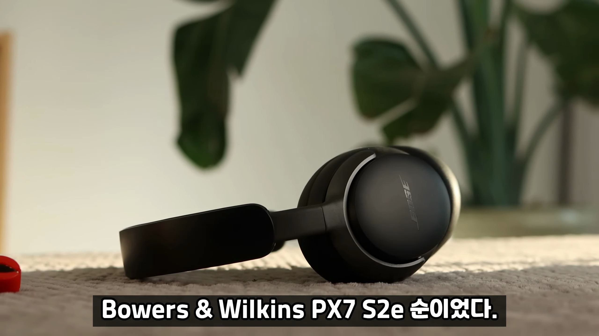

최고의 블루투스 헤드폰 비교: 성능과 가격을 모두 잡아라!
블루투스 헤드폰의 기술 발전으로 다양한 제품이 시장에 등장하고 있습니다. 이러한 선택의 폭에서 어떤 헤드폰을 선택해야 할지 고민하는 소비자들을 위해, 이번 포스트에서는 다섯 가지 인기 헤드폰을 다양한 기준으로 비교하고, 가장 추천할 만한 제품을 소개합니다. 가격이 비싼 제품이 반드시 좋은 것은 아니라는 점을 염두에 두고 참고하시기 바랍니다.

헤드폰 선택의 중요성
- 블루투스 헤드폰 기술 발전으로 다양한 제품 등장
- 올바른 선택을 위한 비교 필요
최근 블루투스 헤드폰 시장은 기술 발전으로 더욱 다양해졌습니다. 하지만 어떤 제품을 선택해야 할지 고민하는 경우가 많습니다.

비교 대상 제품 소개
- 보스 콰이어트 컴포트 울트라
- 애플 에어팟 맥스
- 젠하이저 모멘텀 4
- 소니 마크 5
- 바워스 앤 윌킨스 PX7 SE
이번 테스트에서는 다섯 가지 인기 헤드폰을 비교했으며, 각각의 특징과 성능을 살펴보았습니다.

첫 번째 기준: 액티브 노이즈 캔슬링 성능
- 주변 소음 차단 기능 중요
- 테스트 결과 보스 제품 탁월
액티브 노이즈 캔슬링 성능은 대중교통이나 여행 중에 중요한 요소가 될 수 있습니다.

두 번째 기준: 투명성 모드
- 주변 소리 듣는 기능
- 애플 에어팟 맥스 우수한 성능
투명성 모드는 주변 소리를 들으면서도 헤드폰을 사용할 수 있는 기능으로, 애플 제품이 뛰어난 성능을 보였습니다.

세 번째 기준: 디자인과 조작 방식
- 제품 외관과 버튼 조작의 편리함
- 바워스 앤 윌킨스 PX7 SE 우수한 평가
디자인과 조작 방식은 사용자 경험에 중요한 요소로, 버튼 조작 방식을 선호하는 사용자가 많습니다.

네 번째 기준: 착용감
- 장시간 착용 시 편안함
- 보스 콰이어트 컴포트 울트라 뛰어난 착용감
착용감은 장시간 사용 시 편안함과 무게가 중요한 요소로, 보스 제품이 특히 우수했습니다.

다섯 번째 기준: 마이크 품질
- 통화 품질과 노이즈 저항성
- 소니 마크 5 최고의 평가
마이크 품질은 통화뿐만 아니라 화상 회의에서도 중요하며, 소니 제품이 뛰어난 성능을 보였습니다.
여섯 번째 기준: 배터리 수명
- 실사용 시간 측정
- 젠하이저 모멘텀 4가 가장 긴 수명
배터리 수명은 노이즈 캔슬링 활성화 상태에서의 실사용 시간이 가장 중요합니다.

일곱 번째 기준: 음질
- 젠하이저 모멘텀 4 최고의 평가
- 고음, 중음, 저음 균형 잡힌 사운드
음질은 사용자의 음악 감상 경험에 큰 영향을 미치며, 젠하이저 제품이 인상적인 결과를 보여주었습니다.

여덟 번째 기준: 기능성
- 멀티포인트 연결, 전용 앱 지원
- 소니 마크 5 많은 기능 제공
기능성은 여러 가지 활용 목적에 따라 중요한 요소로, 소니 제품이 가장 많은 기능을 제공했습니다.

아홉 번째 기준: 가격 대비 성능
- 가성비 좋은 제품 찾아보기
- 젠하이저 모멘텀 4 최고의 평가
가격 대비 성능은 할인 가격을 기준으로 평가하였으며, 젠하이저 제품이 가성비가 뛰어난 제품으로 평가되었습니다.

총평 및 추천 제품
- 가장 추천할 만한 제품 젠하이저 모멘텀 4
- 소니 마크 5, 보스 콰이어트 컴포트 울트라
종합적으로, 추천할 만한 제품은 젠하이저 모멘텀 4이고, 기대 이상 성능을 보여준 제품들입니다.
Tags: #블루투스 헤드폰 #액티브 노이즈 캔슬링 #투명성 모드 #헤드폰 비교 #음질 #착용감 #가성비 #마이크 품질 #배터리 수명